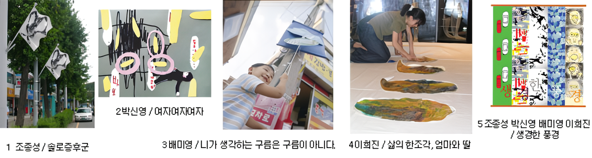
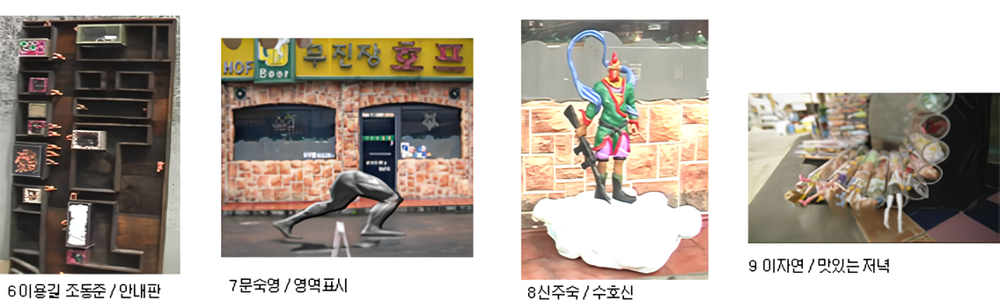
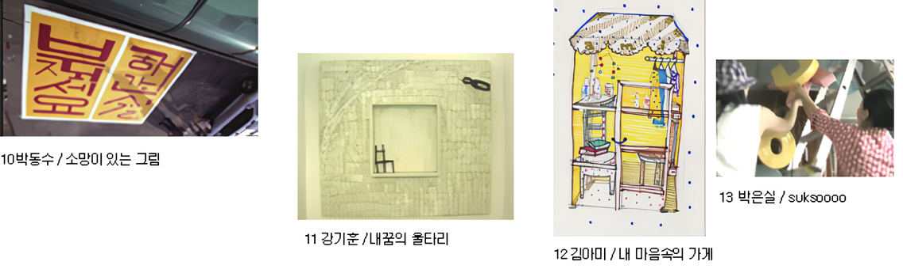
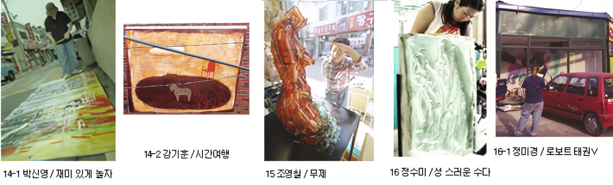
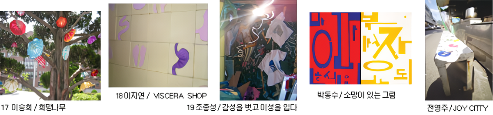
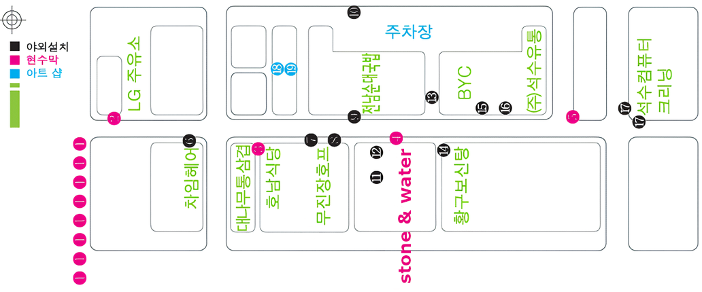
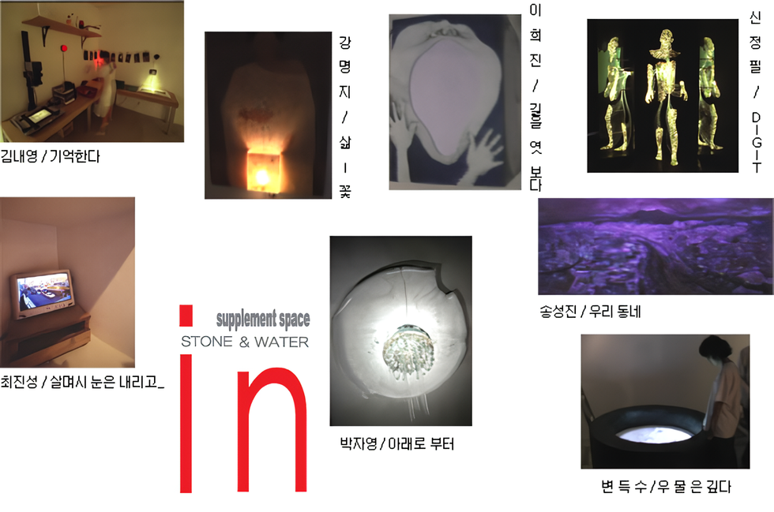
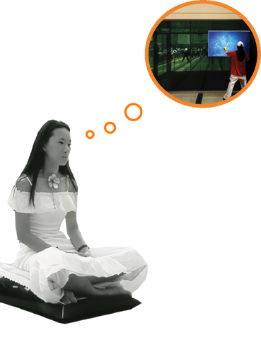

생경 - 익숙하고 낯선 풍경
2003 스톤앤워터 전시지원공모선정 네번째 전시
2003_0823 ▶ 2003_0926
.png)
오프닝 퍼포먼스_댄싱 페인팅
2003_0823_토요일_05:00pm_안양역 2층 대합실(전철 1호선 안양역)
책임기획
변득수_류승효
참여작가
강기훈 SONY_강명지 소우_김아미 A M KIM_김내영 내영이_문숙영 sun light_박동수 미류_박신영 꿈꾸는이
박은실 silsil_박자영 spungku_배미영 toni_변득수 두눈을부릅뜬자_송성진 쏭쏭_신정필 Feel so good
신주숙 쑤기쑤기_이승희_이지연 야시_이용길 실루엣 곰_이자연 자연이_이희진 우진이
전영주 bluemap_정수미 몸빼소녀_정미경_조영철_조종성 dong한국화_최진성 nada_조동준 선인장
백미현 백미_레드클렌_정미경_박찬응_이미정 아우라_이명훈 직지_최민호 tionmino01000_김승환
장 소
퍼포먼스 안양역 / 생활 속 전시 석수 시장 / 보충대리공간 스톤 앤 워터
주 최
보충대리공간 스톤앤워터
주관
현시대미술발전모임(21cagg.mr4u.com)
후 원 : 안양시
협 찬 : 웰비스호텔&리조트(안양블루몬테) (주)석수유통 아침미디어 만안구청 안양역 석수시장상인
supplement space Stone&Water
경기도 안양시 만안구 석수2동 286-15번지
Tel. 031_472_2886
‘생경-익숙하게 낯선 풍경’은 현미발모(현시대미술발전모임. 21c Art Growth Group)의 두 번째 프로젝트 타이틀이다. 우린 익숙하지 않은 것을 보았을 때 ‘생경(生硬)하다’고 흔히 말한다. 그런데 현미발모는 그 ‘생경’을 ‘익숙하게 낯선 풍경’으로 해석 했다. 따라서 ‘생경-익숙하게 낯선 풍경’은, 우리가 익숙하게 알고 있는 것을 생경하게 만들어 놓은 셈이다.
왜일까?
우선 무엇이 ‘익숙하게 낯선 풍경’이란 말인가? 현미발모(현시대미술발전모임. 21c Art Growth Group) 는 “미술이라는 막연한 개념과 존재는 익숙하지만, 우리의 현실은 그것을 익숙하게 즐기거나 받아들이기 힘들다.” 우리는 ‘미술’에 대해 이미 익숙해 있지만, 우리는 현실에서 그 익숙한 미술을 익숙하게 즐기거나 받아들이기 힘들단다. 말하자면 미술이라는 이름에 우리는 익숙해 있지만 그 미술을 소비(감상)하는데 익숙하지 못하다고 말이다. 따라서 ‘생경-익숙하게 낯선 풍경’은 일종의 ‘한국현대미술의 현주소’가 되는 것이다.
그러면 현미발모가 타킷으로 삼고 있는 것은 관객에게 익숙한 현대미술이 아닌가? 이를테면 우리 관객이 현대미술을 익숙하게 소비할 수 있도록 제공하는 역할을 하겠다고 말이다. 한 마디로 현미발모는 허울 좋은 이름만 익숙한 현대미술이 아니라 작품소비(감상)에서도 현대미술을 익숙하게 만들겠다.
현미발모는 현시대 미술문화의 문제점을 파악하고 그 대안을 찾는 모임이다. 기존 미술계의 병폐들 중의 하나인 학연, 지연을 넘어 온라인(인터넷)을 통해 담론을 형성하고 그 결과물을 가지고 오프라인 상으로 실천을 모색한다. 현미발모 온라인은 2000년5월28일 다음(DAUM)에 커뮤니티를 개설했다. 현재 그 커뮤니티의 회원은 497명이다. 현미발모는 온라인 상에서 현대미술의 문제점에 대한 논의와 를 거쳐 지난 2002년 8월 5일부터 8월 17일까지 첫 번째 프로젝트를 부산대 상설할인매장에서 ‘가라사니 진열창’이라는 타이틀로 전시를 개최했다.
흔히 ‘미술’하면 특정 소수만이 향유하는 것으로 간주된다. 하지만 현미발모는 미술을 특정 소수만이 아니라 많은 사람들이 함께 공유하고 소통할 수 있는 프로젝트를 추진한다. 따라서 현미발모는 미술인들 간의 소통뿐만 아니라 일반인들 간의 소통 그리고 미술 이외의 다른 영역간의 소통 등 다양한 소통에 대한 담론을 기본으로 하여 구체적인 실천(프로젝트)을 지향한다.
지난 2002년 8월에 진행된 프로젝트 ‘가라사니 진열창’을 통해 미술을 생활 속에서 감상할 기회를 만들었고 ‘학연과 지연의 한계’를 부분 극복하였다.
현미발모의 두 번째 프로젝트인 ‘생경-익숙하게 낯선 풍경’은 지난 ‘가라사니 진열창’에서 미비했던 점들을 부분 보충하여 일반 관객에게 말 걸기를 시도하고자 한다. 물론 현미발모의 프로젝트는 지속적으로 진행될 것이다.
'생경-익숙하게 낯선 풍경’은 ‘2003년 스톤앤워터 전시지원 공모’에 선정된 전시이다. 현미발모(현시대미술발전모임. 21c Art Growth Group)는 두 번째 프로젝트 실천을 위해 온라인 상에서 논의를 통해 ‘생경-익숙하게 낯선 풍경’이란 프로젝트를 기획했다. ‘가라사니 진열창’이 부산에서 열린 전시인 반면, ‘생경’은 안양의 주변부에서 개최되는 전시이다.
현대미술은 다양성을 담보로 진행되고 있다. 서로 간의 고유한 영역을 지키든, 각 영역간의 경계를 허물어 새로운 것을 만들어 나가든, 그것은 그 방향을 믿는 다양함 중의 하나일 뿐이라고 생각한다. 이번 ‘생경’전에서 우리가 제시하는 방향은 폭넓은 소통에의 실험이자 미술이 지니고 있는 고유한 영역확장을 통한 대중문화에로의 접근이다.
이번 프로젝트를 통해 우리가 지향하고자 하는 것은 배려장치를 통해 관객과의 소통에 보다 용이하게 접근하는 것이다. 여기서 말하는 ‘배려장치’란 ‘생활 속에서 작품감상’을 뜻 하고 작품의 결과물 뿐만이 아니라 과정까지 제시를 한다.‘생경’전은 단지 전시장에만 국한되는 것이 아니라 전시장 주변에 위치한 석수시장에서도 개최된다. 관객은 전시장뿐만 아니라 생활 속에서 자연스러운 작품을 관람할 수 있다.
■ 생활속의 전시
작품이 설치되는 석수시장의 풍경을 전시 기간동안 바꾸는 전시가 될 것이다. 전시 공간의 확대를 통해 형성되는 다양한 관계를 풀어나가는 과정에서 미술과 관객이 좀 더 가깝게 함께 호흡할 수 있는 가능성을 찾고 실천할 수 있는 또 다른 토대를 구축한다.
    

■ 보충대리 공간전시
생활 주변에 이미 존재하고 있는 풍경들의 낯설음에 대한 인식, 관찰, 해석의 결과물을 현대 미술의 대표적인 방법인 매체를 통해 풀어내며, 매체작업과 함께 특정한 공간 조성이 필요한 설치 작품도 함께 전시된다. 그리고 관객의 이해를 돕기 위한 장치 설정을 통해 보다 친숙하고 편안한 전시 관람이 될 수 있도록 배려한다

■ 퍼포먼스
순수미술, 특히 현대미술에 대한 일반인들의 거리감을 좁히는 방법의 하나로 장르의 경계를 뛰어 넘는 가장 보편적인 현대미술 장르인 ‘퍼포먼스’를 통해 작가와 작품, 관객간의 거리를 좁힐 수 있는 계기를 마련한다. 특히 관객의 흥미를 유발할 수 있는 요소가 많은 댄싱 페인팅 퍼포먼스와 참여를 유발할 수 있는 방 법이 제시되는 참선 퍼포먼스는 전체 프로젝트의 모토인 ‘소통’에 용이하게 접근하는 구체적 예를 제시한다.

퍼포먼스 : 댄싱 페인팅, 참선 퍼포먼스
퍼포머 : 백미
일시 : 댄싱 페인팅 (8월23일 오후 5시)
참선 퍼포먼스 (8.24-29일 10-12시,13-15시,16-18시)
장소 : 안양역 2층 대합실
■ 유리조형연구팀 레드클렌
안양시민들과 관람객들에게 색다른 유리공예 체험의 기회를 제공한다. 실제로 유리공예는 미술을 보다 가깝게 느끼게 할 수 있는 힘을 지니고 있으며, 아름답고 신비한 유리공예의 과정을 직접 보는 것과 동시에 실제 작업에 참여해 시민들과 관객이 스스로 만들고 싶은 공예품을 전문가의 도움을 받아 제작하는 과정을 통해 다양한 미술적 효과를 기대할 수 있다.
■ 미술이 어지럽냐?
활용 폭이 제한적인 일반 도록의 형식을 배제하고 전시와 관련된 내용을 기사화시켜 도록을 개별 프로젝트로 진행한다. 그리고 주요 대상층을 일반 관객으로 하여 보다 편안하게 읽을 수 있는 방법을 찾고 실천한다.
최민호, 신주숙, 김승환, 이명훈
출판일 2003년 9월 5일
https://21cagg.org/21cagp2/sk2.html
■ 전시문의
현시대미술발전모임(21c Art Growth Group)
부회장 : 류성호 016-866-1235 sid73@hanmail.net
벽덕수 019-479-4772 bdeuksoo@hanmail.net
Homepage http://21cagg.mr4u.com/
‘생경’전은 관객이 자연스럽게 작품을 관람할 수 있도록 유도하기 위해 익숙해 있는 석수시장의 풍경에 미술작품을 침투시켜 일상공간을 생경하게 느끼게 하는 동시에 미술을 익숙하게 만들고자 한다. 물론 석수시장 내에서의 전시는 공공영역에서의 전시란 점에서 우리는 적잖은 논의를 거듭했다. 현미발모는 무엇보다 시장과 작품의 조화에 주목하였다. 결국 우리는 시장과 작품의 조화를 통해 생활 환경이 미술적인 요소로 어떻게 보완되고 발전할 수 있는가 하는 방법에 대한 실험을 하고자 하는 것이며 이는 대중들에게 다양한 문화를 즐길 수 있는 계기 또한 마련되는 것이다.